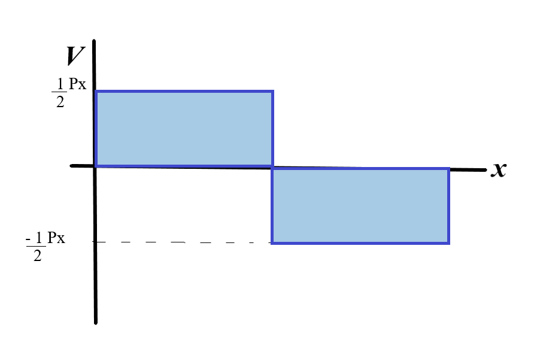

The shear force, axial force and bending moment are denoted by V, P and M respectively
In order to find their values, we apply the equilibrium equations (Fx=0, Fy=0 and Mz=0) but here, for each equation,
we balance the external forces with the internal forces.
The sign convention adopted for P, V and M is shown.
An easy way to remember the conventions is: For axial force, positive is directed away from the beam.
For bending moment, the beam becomes concave by applying positive moment (in the shape of a bowl)
There are no horizontal forces in the given problem so the axial force is zero everywhere.
For the shear force
from A to C,
the total external force in the positive V direction is +P/2.
Hence, the internal force needed to balance it is -P/2.
Thus, the shear force V is a constant equal to P/2 from A to C.
For the shear force from C to B,
The total external force in the positive V direction is -P + P/2 = -P/2
Thus, the internal force needed to balance this external force is
V = -P/2
(the direction of V is shown in the diagram : left section)
At B, the shear force becomes -P/2 + P/2 = 0

Let us consider the distance from A to be x
For the moment, from A to B,
the moment in the anticlockwise direction for the left section is given by,
(-P/2)*x
Thus, the balancing internal bending moment M is given by +1⁄2 Px
For the moment from B to C,
the moment in the clockwise direction is given by (P/2)*(x) - (P)*(x-1⁄2L) = -1⁄2 Px + 1⁄2 PL
Thus, the balancing internal moment is given by
M = -1⁄2 Px + 1⁄2 PL
Now, let's solve a problem by applying what we have learnt here: